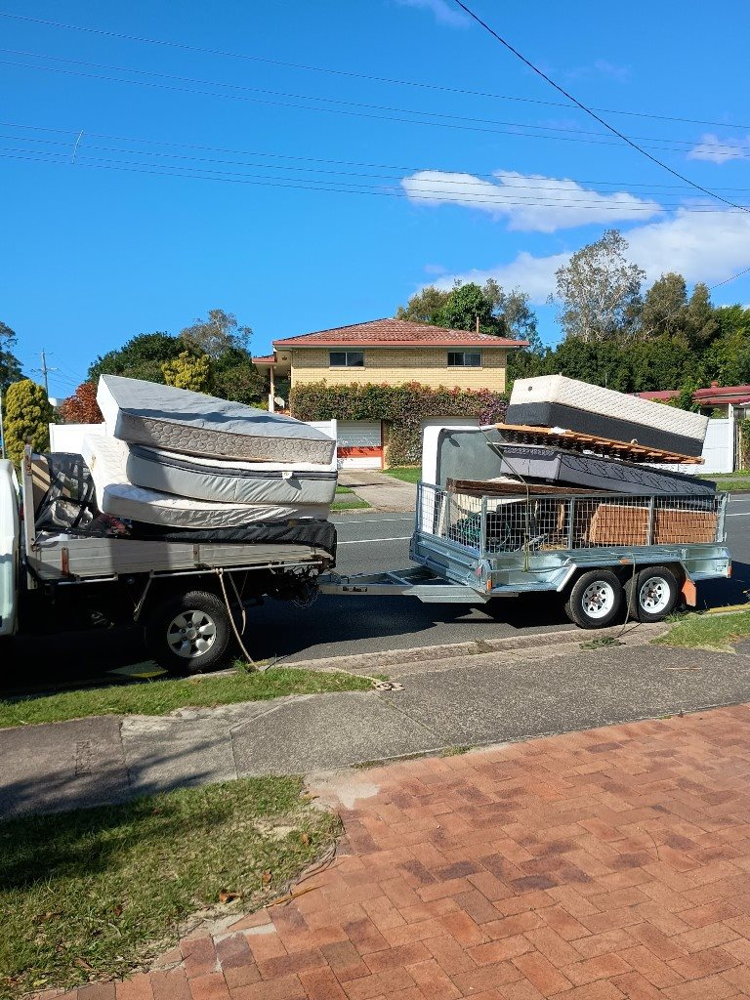
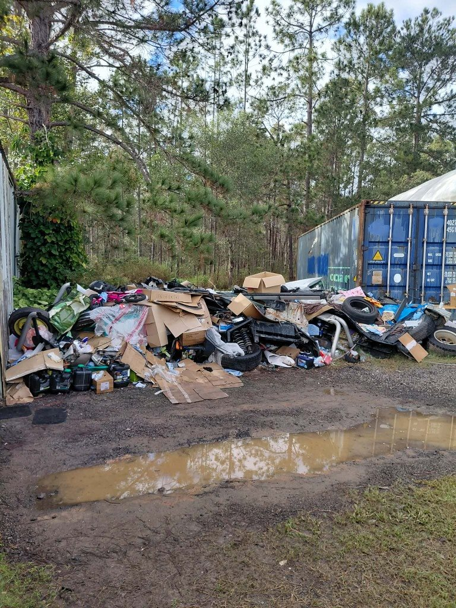
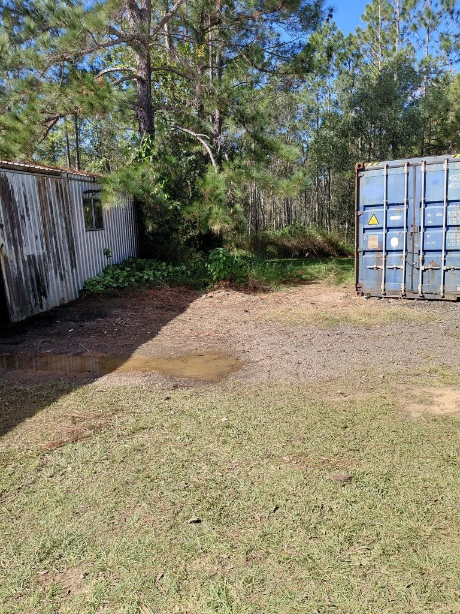

“Awesome service from Matt and his team — fast response, excellent communication, and went over and above to accommodate our needs quickly. Would highly recommend!”
Alana Paulin
7 reviews
Nambour properties range from Queenslanders on stumps to acreage blocks with long driveways and sheds that have collected years of useful — and not-so-useful — stuff. When it is time for a proper clear out, Waymaker Rubbish Solutions delivers rubbish removal Nambour locals can rely on for patient, respectful service and pricing that reflects real access and volume.
We help with deceased estates, renovation debris, green waste and general household rubbish across the hinterland and wider Sunshine Coast. Show us what needs to go and our crew handles the lifting, loading and disposal. For an upfront quote, call 0423 101 334 or send a few photos of the pile and access points.
Reliable rubbish removal for Nambour homes, properties and businesses. Whether you're clearing out the shed, tackling years of accumulated household junk, renovating a property or simply need the backyard cleaned up, Waymaker makes getting rid of it straightforward.
We remove old furniture, household rubbish, renovation waste, green waste and general unwanted items, with all the lifting and loading taken care of. You'll get upfront pricing, friendly local service and responsible disposal from a team that takes pride in doing the job properly. From a few bulky items to a full ute and trailer load, Waymaker provides dependable rubbish removal across Nambour and the surrounding areas.
We also provide rubbish removal throughout surrounding Sunshine Coast suburbs including:
More service areas: Maroochydore · Caloundra · Aura · Buderim · Mooloolaba · Coolum Beach · rubbish removal across the Sunshine Coast
Rubbish removal pricing depends on how much needs to be removed, the type of waste and access to the property. Waymaker provides upfront quotes so you know the expected cost before work begins.
Our standard pricing includes loading, transport and base disposal fees. Send us a few photos of your rubbish and your location and we can usually provide a straightforward quote before booking.
| Load size | Typical price | Good for |
|---|---|---|
| Small Load | $120 to $180 | A few items, boxes or a small cleanup |
| 1/4 10 x 5 Trailer Load | $180 to $250 | Small household cleanouts or bulky items |
| 1/2 10 x 5 Trailer Load | $250 to $300 | Furniture, household junk or renovation waste |
| 3/4 10 x 5 Trailer Load | $300 to $350 | Larger cleanouts and mixed rubbish |
| Full 10 x 5 Trailer Load | $350 to $450 | Maximum standard load for bigger cleanups |
| Full Ute Load and 10 x 5 Trailer Load | from $650 | Maximum standard load for bigger cleanups |
| Heavy Materials | Custom quote | Concrete, soil, bricks, tiles and other heavy waste |
Heavy materials such as concrete, soil, bricks and tiles require a custom quote due to their weight and disposal costs. Other specialised or regulated waste may also require separate disposal arrangements.

Waymaker provides rubbish removal for everything from a few unwanted household items to larger property and commercial clean outs. Our team handles the lifting and loading, then transports the rubbish for appropriate disposal.
Clear unwanted furniture, household rubbish, garage clutter, mattresses, whitegoods, moving waste and other unwanted items without having to load and transport everything yourself.
Rubbish removal for offices, retail premises, hospitality businesses, property managers and commercial sites, including furniture, general waste and clearances.
Fast property clearances for end of lease situations, abandoned belongings, pre sale clean ups and properties that need to be cleared before the next tenant or owner.
Respectful assistance clearing unwanted items and rubbish from deceased estates, with care taken around the property and belongings throughout the process.
Every clean up is different. We regularly help customers remove a mixture of household, property and renovation rubbish.
Not sure whether we can take something? Send us a photo and we will let you know before booking.
A skip bin can make sense when you need a container on site for several days and want to load the rubbish gradually. For jobs where the rubbish is already ready to go, a full service rubbish removal team can be much easier.
With Waymaker, there is no skip to load yourself and no need to leave a bin sitting on the property. We arrive, load the rubbish, take it away and handle the disposal.
For furniture removal, household clean outs, rental clearances and smaller renovation clean ups, this can save considerable time and physical work.


Pricing depends on the amount of rubbish, the type of materials and access to the property. Small collections generally start from our standard small load pricing, while larger clean outs are quoted according to volume. Send us a few photos for a quick estimate.
Yes. Our team handles the lifting and loading as part of the service. You simply show us what needs to go and we take care of the rest.
No. Waymaker provides a full rubbish removal service, so there is no need to hire or load a skip bin. We load the rubbish directly and take it away.
We remove many common types of household, furniture, property, green and renovation waste. Heavy materials and specialised waste may require a separate quote. Send us a photo if you are unsure about a particular item.
Yes. We can remove unwanted furniture, mattresses and other bulky household items as part of a larger clean out or as a smaller collection.
Yes. We assist businesses, property managers, real estate agencies and commercial clients with rubbish removal and property clearances.
Call Waymaker on 0423 101 334 or send us photos showing what needs to be removed along with the property location. We will provide a straightforward quote based on the job.
Send Waymaker a few photos of what needs to go and we can provide a straightforward quote. We handle the lifting, loading and disposal so you can get the space cleared without the hassle.
Real Sunshine Coast feedback
“Awesome service from Matt and his team — fast response, excellent communication, and went over and above to accommodate our needs quickly. Would highly recommend!”
Alana Paulin
7 reviews
“Matthew was very friendly, and did such a great job with removing rubbish and taking it to the tip. 100% recommend his service.”
Luke P
1 review
“I cant speak highly enough about Matts work ethic. He does everything with great punctuality, pricing and thoroughness. I would recommend his services to anyone wanting the job done right”
G J
1 review
“Matt was great to deal with, kept me informed with all processes and timing. Would definitely use his services again.”
Wendy Lower
2 reviews